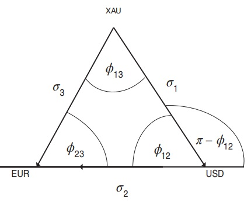
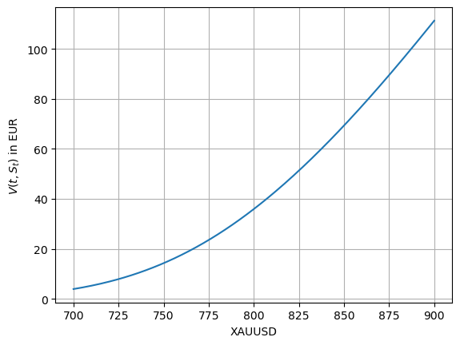

Pricing a Quanto
The infamous currency triangle.
We know that the cross
$$XAUUSD = \frac{XAUEUR}{USDEUR}$$
The continuously compounded returns on the pair $XAUUSD$ are the log of the price relative. So,
$$r^{XAUUSD} = \log\left(\frac{XAUUSD_{t}}{XAUUSD_{t-1}}\right)$$
Thus:
$$
\begin{align*}
r^{XAUUSD} &= \log\left(\frac{\frac{XAUEUR_{t}}{USDEUR_t}}{\frac{XAUEUR_{t-1}}{USDEUR_{t-1}}}\right)\\
&= \log\left(\frac{XAUEUR_{t}}{XAUEUR_{t-1}}\right) - \log \left(\frac{USDEUR_t}{USDEUR_{t-1}}\right)\\
&= r^{XAUEUR} - r^{USDEUR}
\end{align*}
$$
Since these returns are random variables, we have:
$$
\begin{align*}
\sigma_{XAUUSD}^2 &= \sigma_{XAUEUR}^2 + \sigma_{USDEUR}^2 - 2\sigma_{XAUEUR}\cdot \sigma_{USDEUR}\cdot \rho_{XAUEUR,USDEUR}
\end{align*}
$$
This looks very familiar to the cosine rule and we can visualize this calculation using elementary geometry. Label the corners of the triangle $XAU$, $EUR$, and $USD$, the vectors of the edges $\overrightarrow{\sigma}_1$ from $XAU$ to $USD$, $\overrightarrow{\sigma}_2$ from $XAU$ to $EUR$, and $\overrightarrow{\sigma}_3$ from $USD$ to $EUR$. The edge lengths can be viewed as volatilities and the cosines of the angles as correlations.

So, in the FX market, the correlation structure can be computed explicitly in terms of the known volatilities using the interdependence of exchange rates.
What if the two currency pairs don’t have a common currency?
You must read this excellent note by Wystup. For example, to compute the correlation between GBPJPY and EURUSD, you inflate the market of these two currency pairs to include following ${4 \choose 2} = 6$ pairs, for example: GBPJPY, GBPEUR, GBPUSD, EURJPY, USDJPY and EURUSD. Geomtrically, we introduce a tetrahedron with triangular sides whose corners are the four currencies and each of the ${6 \choose 2}=15$ correlations can be implied.
Quanto-drift adjustment.
A quanto option is any cash-settled option, whose payoff is converted into a third currency at maturity at a pre-specified rate, called the quanto factor.
Consider the example of a Gold contract with underlying XAU/USD in XAU-USD quotation quantoed in EUR. Since the payoff is in EUR, we let EUR be the numeraire or domestic currency.
Consider the Black-Scholes model with $\mathbb{Q}$-dynamics:
$$
\begin{align*}
\text{XAU-EUR : } dS_t^{(3)} &= S_t^{(3)}((r_{EUR} - r_{XAU})dt + \sigma_3 dW_t^{(3)}) \\
\text{USD-EUR : } dS_t^{(2)} &= S_t^{(2)}((r_{EUR} - r_{USD})dt + \sigma_2 dW_t^{(2)}) \\
dW_t^{(3)}dW_t^{(2)} &= \rho_{23} dt
\end{align*}
$$
The actual underlying is $S_t^{(1)} = XAUUSD$. And
$$S_t^{(1)} = \frac{S_t^{(3)}}{S_t^{(2)}}$$
By Ito’s formula, we have:
$$
\begin{align*}
d\frac{1}{S_t^{(2)}} &= -\frac{1}{(S_t^{(2)})^2} dS_t^{(2)} + \frac{1}{2}\cdot\frac{2}{(S_t^{(2)})^3}dS_t^{(2)}\cdot dS_t^{(2)}\\
&= -\frac{1}{S_t^{(2)}}((r_{EUR} - r_{USD})dt + \sigma_2 dW_t^{(2)})+\frac{1}{S_t^{(2)}}\sigma_2^2 dt\\
&= \frac{1}{S_t^{(2)}}(r_{USD} - r_{EUR} + \sigma_2^2)dt - \frac{1}{S_t^{(2)}}\sigma_2 dW_t^{(2)})
\end{align*}
$$
So, I can write:
$$
\begin{align*}
dS_t^{(1)} &= \frac{1}{S_t^{(2)}}dS_t^{(3)} + S_t^{(3)}d\frac{1}{S_t^{(2)}} + d\frac{1}{S_t^{(2)}}\cdot dS_t^{(3)}\\
&= S_t^{(1)}((r_{EUR} - r_{XAU})dt + \sigma_3 dW_t^{(3)}) \\
&+ S_t^{(1)}((r_{USD} - r_{EUR} + \sigma_2^2)dt- \sigma_2 dW_t^{(2)})) \\
&- S_t^{(1)}\sigma_2 \sigma_3 \rho_{23}dt \\
&= S_t^{(1)}((r_{USD}- r_{XAU}+ \sigma_2^2 -\sigma_2 \sigma_3 \rho_{23})dt \\
&+ S_t^{(1)}(\sigma_3 dW_t^{(3)} - \sigma_2 dW_t^{(2)})
\end{align*}
$$
We can introduce another process:
$$dW_t^{(1)} = \frac{\sigma_3 dW_t^{(3)} - \sigma_2 dW_t^{(2)}}{\sigma_1}$$
Integrating on both sides, we find that $W_t^{(1)}$ is a martingale. Further:
$$
\begin{align*}
dW_t^{(1)} \cdot dW_t^{(1)} &= \frac{(\sigma_3 dW_t^{(3)} - \sigma_2 dW_t^{(2)})^2}{\sigma_1^2} \\
&=\frac{\sigma_3^2 + \sigma_2^2 - 2\sigma_2 \sigma_3 \rho_{23}}{\sigma_1^2}\cdot dt \\
&= dt
\end{align*}
$$
Thus, it has quadratic variation $t$. So, by the levy characterization theorem, $W_t^{(3)}$ is a standard brownian motion. And we can write:
$$dS_t^{(1)} = S_t^{(1)}((r_{USD}- r_{XAU}+ \sigma_2^2 -\sigma_2 \sigma_3 \rho_{23})dt + \sigma_1 S_t^{(1)}dW_t^{(1)}$$
The law of cosines implies that:
$$
\begin{align*}
\sigma_3^2 &= \sigma_1^2 + \sigma_2^2 - 2\sigma_1 \sigma_2 \rho_{12}\\
\sigma_1^2 &= \sigma_3^2 + \sigma_2^2 - 2\sigma_2 \sigma_3 \rho_{23}
\end{align*}
$$
which yields
$$
\begin{align*}
\sigma_2^2 - \sigma_2 \sigma_3 \rho_{23} &= \sigma_1 \sigma_2 \rho_{12}
\end{align*}
$$
Inserting this into the equation for the dynamics of $S_t^{(1)}$, we have:
$$dS_t^{(1)} = S_t^{(1)}((r_{USD}- r_{XAU}+ \sigma_1 \sigma_2 \rho_{12})dt + \sigma_1 S_t^{(1)}dW_t^{(1)}$$
Quanto Vanilla
Common among FX options is a quanto plain vanilla paying
$$V_T = Q[(S_T - K)^{+}]$$
where $S_T$ is the underlying for the FOR-DOM quotation.
We can write the $\mathbb{Q}$-dynamics of the FOR-DOM pair as:
$$dS_t^{(1)} = S_t^{(1)}((r_{DOM}- r_{FOR}+ \sigma_{1} \sigma_{2} \rho_{12})dt + \sigma_1 S_t^{(1)}dW_t^{(1)})$$
where $\sigma_1$ is the volatility of the FOR-DOM, $\sigma_2$ is the volatility of DOM-QUANTO and $\rho_{12}$ is the correlation between FOR-DOM,DOM-QUANTO pairs.
The solution to this SDE is:
$$S_t^{(1)} = S_0^{(1)}\exp\left((r_{DOM}- r_{FOR}+ \sigma_{1} \sigma_{2} \rho_{12} - \frac{\sigma_1^2}{2})t + \sigma_1 S_t^{(1)}W_t^{(1)}\right)$$
Let $r_Q$ be the interest rate in the QUANTO currency. By the risk-neutral pricing formula, the value at time $t$ is:
$$
\begin{align*}
V(t,x) &= e^{-r_{Q}\tau}Q\mathbb{E}^{\mathbb{Q}}[(S_T - K)\cdot 1_{S_T > K}|\mathcal{F}_t] \\
&= e^{-r_Q \tau} \left[ \mathbb{E}^{\mathbb{Q}}[S_T \cdot 1_{S_T > K}|\mathcal{F}_t] - K\mathbb{E}^{\mathbb{Q}}[ 1_{S_T > K}|\mathcal{F}_t]\right]
\end{align*}
$$
The two expectations are computed in the standard way, as in Black-Scholes theory. We get:
$$
\begin{align*}
V(t,S_t) &= e^{-r_{Q}\tau}Q\left[S_t e^{\tilde{\mu}\tau}\Phi(d_{+}(\tau,S_t)) - K\Phi(d_{-}(\tau,S_t))\right]\\
d_{\pm}(\tau,x) &= \frac{\log\frac{x}{K} + (\tilde{\mu}\pm\frac{\sigma_1^2}{2})\tau}
{\sigma\sqrt{\tau}}\\
\tilde{\mu} &= r_{DOM} - r_{FOR} - \sigma_1 \sigma_2 \rho_{12}
\end{align*}
$$
import numpy as np
from scipy.stats import norm
# ---------------------------------------
# Black formula for European Quanto Call
# ---------------------------------------
def d_plus(tau,x,K,mu,sigma):
return (np.log(x/K) + (mu + (sigma**2)/2)*tau)/(sigma * np.sqrt(tau))
def d_minus(tau,x,K,mu,sigma):
return (np.log(x/K) + (mu - (sigma**2)/2)*tau)/(sigma * np.sqrt(tau))
def blackScholes(S_t,K,r_DOM,r_FOR,r_Q,tau,sigma_1,sigma_2,sigma_3,Q,notional):
rho_12 = (sigma_1**2 + sigma_2**2 - sigma_3**2)/(2*sigma_1*sigma_2)
mu = r_DOM - r_FOR - (sigma_1 * sigma_2 * rho_12)
d1 = d_plus(tau,S_t,K,mu,sigma_1)
d2 = d_minus(tau,S_t,K,mu,sigma_1)
phi_d_plus = norm.cdf(d1)
phi_d_minus = norm.cdf(d2)
df_quanto = np.exp(-r_Q * tau)
return (df_quanto * Q * (S_t * np.exp(mu * tau) * phi_d_plus - K * phi_d_minus))* notional
# -----------------------------
# Inputs to the model
# -----------------------------
FOR = 'XAU'
DOM = 'USD'
QUANTO = 'EUR'
notionalInQuantoCcy = 1
strike = 810
maturityInYears = 1.00
FORDOM_spot = 800
DOMQUANTO_spot = 1.00
FORQUANTO_spot = FORDOM_spot * DOMQUANTO_spot
FORDOM_vol = 0.10
DOMQUANTO_vol = 0.12
FORQUANTO_vol = 0.20591260281974003
r_FOR = 0.005; r_DOM = 0.02; r_QUANTO = 0.04;
quanto_call = blackScholes(
S_t = FORDOM_spot,
K = strike,
r_DOM = r_DOM,
r_FOR = r_FOR,
r_Q = r_QUANTO,
tau = maturityInYears,
sigma_1 = FORDOM_vol,
sigma_2 = DOMQUANTO_vol,
sigma_3 = FORQUANTO_vol,
Q = 1,
notional = notionalInQuantoCcy
)
print(f"Quanto Call Option price = {quanto_call} {QUANTO}")
Quanto Call Option price = 35.9550188943399 EUR
import matplotlib.pyplot as plt
FORDOM_spot = np.linspace(700,900,201)
quanto_prices = []
for S_t in FORDOM_spot:
black_price = blackScholes(
S_t = S_t,
K = strike,
r_DOM = r_DOM,
r_FOR = r_FOR,
r_Q = r_QUANTO,
tau = maturityInYears,
sigma_1 = FORDOM_vol,
sigma_2 = DOMQUANTO_vol,
sigma_3 = FORQUANTO_vol,
Q = 1,
notional = notionalInQuantoCcy
)
quanto_prices.append(black_price)
plt.grid(True)
plt.xlabel(f"{FOR}{DOM}")
plt.ylabel(r"$V(t,S_t)$ in EUR")
plt.plot(FORDOM_spot,quanto_prices)
plt.show(True)
